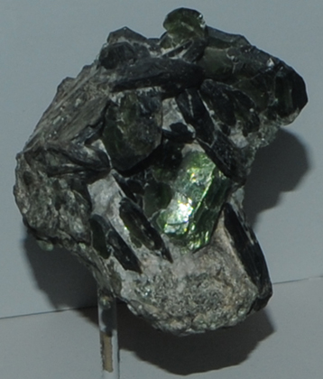

|

| Ca(Mg,Al)3(Al,Si)4O10(OH,F)2
These samples of clintonite are displayed in the Smithsonian Museum of Natural History. Clintonite contains five of the big 8 elements plus fluorine with the composition Ca(Mg,Al)3(Al,Si)4O10(OH,F)2. The sample at left is about 7 cm across and is from Nicolai-Maximilianovsk mine, Achmatowsk, Zlatoust, Urals, Russia.
|